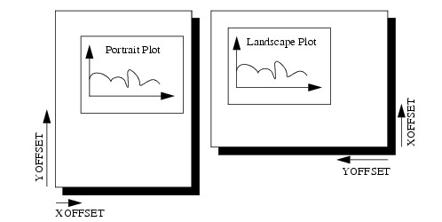
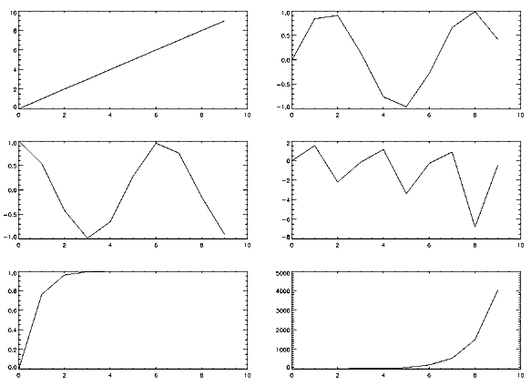
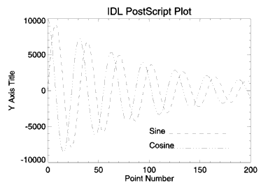
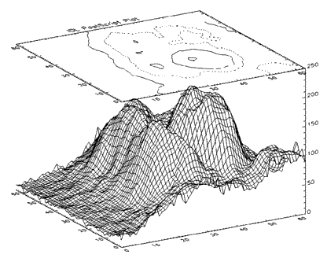

|
|
IDL Reference Guide: IDL Direct Graphics Devices |
|
AVANTGARDE, BITS_PER_PIXEL, BKMAN, BOLD, BOOK, CLOSE_FILE, CMYK, COLOR, COURIER, DEMI, ENCAPSULATED, FILENAME, FONT_INDEX, FONT_SIZE, HELVETICA, INCHES, ISOLATIN1, ITALIC, LANDSCAPE, LIGHT, MEDIUM, NARROW, OBLIQUE, OUTPUT, PALATINO, PORTRAIT, PRE_DEPTH, PRE_XSIZE, PRE_YSIZE, PREVIEW, SCALE_FACTOR, SCHOOLBOOK, SET_CHARACTER_SIZE, SET_FONT, SYMBOL, TIMES, TT_FONT, XOFFSET, XSIZE, YOFFSET, YSIZE, ZAPFCHANCERY, ZAPFDINGBATS
PostScript is a programming language designed to convey a description of a page containing text and graphics. Many laser printers and high-resolution, high-quality photo typesetters support PostScript. Color output or direct color separations can be produced with color PostScript. To direct graphics output to a PostScript file, issue the command:
SET_PLOT, 'PS'
This causes IDL to use the PostScript driver for producing graphical output. Once the PostScript driver is enabled via SET_PLOT, the DEVICE procedure is used to control its actions, as described below. The default settings are given in the following table:
| Note Unlike monitors where white is the most visible color, PostScript writes black on white paper. Setting the output color index to 0, the default when PostScript output is selected, writes black. A color index of 255 writes white which is invisible on white paper. Color tables are not used with PostScript unless the color mode has been enabled using the DEVICE procedure. See Color Images |
To obtain adequate resolution, the device coordinate system used for PostScript output is expressed in units of 0.001 centimeter (i.e., 1000 pixels/cm).
Use the HELP, /DEVICE call to view the current font, file, and other options set for PostScript output.
Information necessary for rendering a set of 35 standard PostScript fonts are included with IDL. (The standard 35 fonts are the fonts found on the Apple Laserwriter II PostScript printer; the same fonts are found on almost any PostScript printer made in the time since the LaserWriter II appeared.) Use of PostScript fonts is discussed in detail in About Device Fonts.
If you have a color PostScript device you can enable the use of color with the statement:
DEVICE, /COLOR
Enabling color also enables the color tables. Text and graphic color indices are translated to RGB by dividing the red, green and blue color table values by 255. As with most display devices, color indices range from 0 to 255. Zero is normally black and white is normally represented by an index of 255. For example, to create and load a color table with four elements, black, red, green and blue:
TVLCT, [0,255,0,0], [0,0,255,0], [0,0,0,255]
Drawing text or graphics with a color index of 0 results in black, 1 in red, 2 in green, and 3 in blue.
As with black and white PostScript, images may be output with 1, 2, 4, or 8 bits, yielding 1, 2, 16, or 256 possible colors. In addition, images are either pseudo-color or TrueColor. A pseudo-color image is a two dimensional image, each pixel of which is used to index the color table, thereby obtaining an RGB value for each possible pixel value. Pseudo-color images are similar to those displayed using the workstation monitor.
| Note In the case of pseudo-color images of fewer than 8 bits, the number of columns in the image should be an exact multiple of the number of pixels per byte (i.e., when displaying 4 bit images the number of columns should be even, and 2 bit images should have a column size that is a multiple of 4). If the image column size is not an exact multiple, extra pixels with a value of 255 are output at the end of each row. This causes no problems if the color white is loaded into the last color table entry, otherwise a stripe of the last (index 255) color is drawn to the right of the image. |
A TrueColor image consists of an array with three dimensions, one of which has a size of three, containing the three color components. It may be considered as three two dimensional images, one each for the red, green and blue components. Use the TRUE keyword to the TV and TVSCL procedures to indicate that the image is a TrueColor image and to specify the dimension over which color is interleaved. RGB data can be interleaved by pixel, by line, or by image. Use the TRUE parameter to specify the method of interleaving. A c column by l line TrueColor image is dimensioned as follows:
|
TRUE Value
|
Dimensions
|
Interleaving
|
|---|---|---|
|
1
|
(3, c, l)
|
Pixel
|
|
2
|
(c, 3, l)
|
Line or Row
|
|
3
|
(c, l, 3)
|
Image
|
The following example writes a 24-bit image, interleaved over the third dimension, to a PostScript file:
SET_PLOT, 'PS' ;Set the PostScript device to *8* bits per color, not 24. DEVICE, FILE='24bit.ps', /COLOR, BITS=8 TV, [[[r]], [[g]], [[b]]], TRUE=3 DEVICE, /CLOSE ; Return plotting to X windows: SET_PLOT, 'X'
| Note Currently, the PostScript device does not support TrueColor plots. Only TrueColor images are supported. |
TrueColor images are also routed through the color tables. The red color table array contains the intensity translation table for the red image, and so forth. Assuming that the color tables have been loaded with the vectors R, G, and B, a pixel with a color value of (r, g, b) is displayed with a color of (Rr, Gg, Bb). As with other devices, a color table value of 255 represents maximum intensity, while 0 indicates an absence of the color. To pass the RGB pixel values without change, load the red, green and blue color tables with a ramp with a slope of 1.0:
TVLCT, INDGEN(256), INDGEN(256), INDGEN(256)
or with the LOADCT procedure:
; Load standard black/white table: LOADCT, 0
Images that are displayed with a black background on a monitor frequently look better if the background is changed to white when displayed with PostScript. This is easily done with the statement:
a(WHERE(a EQ 0B)) = 255B
When the CMYK keyword is set, IDL converts the PostScript output to the CMYK color model as a final step. The indexed or RGB data is mapped to the cyan, magenta, yellow, and black color model just prior to output.
The CMYK format is a subtractive color model that is better suited for color printing. This color model allows some document processing applications and printer control software to easily adjust the overall brightness of an image by manipulating a single channel (K). PostScript files created with the CMYK color model must be processed by an interpreter capable of interpreting PostScript Language Level 2 or higher.
Often, IDL users are confused by the use of the XOFFSET and YOFFSET keywords to the PostScript DEVICE routine. These keywords control the position of IDL plots on the page. XOFFSET specifies the "X" position of the lower left corner of the output generated by IDL. This offset is always taken relative to the lower left-hand corner of the page when viewed in portrait orientation. YOFFSET specifies the "Y" position of the lower left corner of the output generated by IDL. This offset is also taken relative to the lower left-hand corner of the page when viewed in portrait orientation.
The following figure shows how the XOFFSET and YOFFSET keywords are interpreted by the PostScript device in the Portrait (left) and Landscape (right) modes. Note that the landscape plot uses the same origin for determining the effect of the XOFFSET and YOFFSET keywords, but that the output is rotated 270 degrees clockwise.
|  |
The page on the left shows an IDL plot printed in "portrait" orientation. Note that the X and Y offsets work just as we expect them to-increasing the XOFFSET moves the plot to the right and increasing the YOFFSET moves the plot up the page. The page on the right shows an IDL plot printed in "landscape" orientation. Here, the X and Y offsets are still taken relative to the same points even though the orientation of the plot has changed. This happens because IDL moves the origin of the plot before rotating the PostScript coordinate system 270 degrees clockwise for the landscape plot.
| Note The XOFFSET and YOFFSET keywords have no effect when you generate ENCAPSULATED PostScript output. |
Another form of PostScript output is Encapsulated PostScript. This is the format used to import PostScript files into page layout and desktop publishing programs. An Encapsulated PostScript (EPS) file is similar to a regular PostScript file except that it contains only one page of PostScript output contained in a "bounding box" that is used to tell other programs about the size and aspect ratio of the encapsulated image.
Most of the time, output from IDL to an EPS file is properly scaled into the EPS bounding box because commands such as PLOT take full advantage of the plotting area made available to them. Sometimes, however, the default bounding box is inappropriate for the image being displayed.
As an example, suppose you have an image that is narrow and tall that, when TV'ed to an IDL window, fills only a small portion of the plotting window. Similarly, when output to an EPS file, this image will only fill a small portion of the bounding box. When the resulting EPS file is brought into a desktop publishing program, it becomes very hard to properly scale the image since the aspect ratio of the bounding box bears no relation to the aspect ratio of the image itself.
To solve this problem, use the XSIZE and YSIZE keywords to the DEVICE procedure to make the bounding box just large enough to contain the image. Since IDL uses a resolution of 1000 dots per centimeter with the PostScript device, the correct XSIZE and YSIZE (in centimeters) can be computed as:
The following IDL procedure demonstrates this technique. This procedure reads an X Windows Dump file and writes it back out as a properly-sized, 8-bit-color Encapsulated PostScript file:
PRO XWDTOEPS, filename ; Read the XWD file. Pixel intensity information is stored ; in the variable 'array'. Values to reconstruct the color ; table are stored in 'r', 'g', and 'b': array = READ_XWD(filename, r, g, b) ; Reconstruct the color table: TVLCT, r,g,b ; Display the image in an IDL window: TV, array ; Find the size of the picture. The width of the picture ; (in pixels) is stored in s[1]. The height of the picture ; is stored in s[2]: s = SIZE(array) ; Take the 'xwd' (for X Windows Dump) extension off of ; the old filename and replace it with 'eps': fl = STRLEN(filename) filename = STRMID(filename, 0, fl-4) filename = filename + '.eps' PRINT, 'Making file: ', filename PRINT, s ; Set the plotting device to PostScript: SET_PLOT, 'ps' ; Use the DEVICE procedure to make the output encapsulated, ; 8 bits, color, and only as wide and high as it needs to ; be to contain the XWD image: DEVICE, /ENCAPSUL, BITS_PER_PIXEL=8, /COLOR, $ FILENAME=filename, XSIZE=S[1]/1000., $ YSIZE=S[2]/1000. ; Write the image to the file: TV, array ; Close the file: DEVICE, /CLOSE ; Return plotting to X Windows: SET_PLOT, 'x' END
To put multiple plots on the same PostScript page, use the !P.MULTI system variable (described in more detail in !P). !P.MULTI is a 5-element integer array that controls the number of rows and columns of plots to make on a page or in a graphics window.
The first element of !P.MULTI is a counter that reports how many plots remain on the page. The second element of !P.MULTI is the number of columns per page. The third element is the number of rows per page.
For example, the following lines of code create a PostScript file, multi.ps, with 6 different plots arranged as 2 columns and 3 rows:
; Set plotting to PostScript: SET_PLOT, 'PS' ; Set the filename: DEVICE, FILENAME='multi.ps' ; Make IDL's plotting area hold 2 columns and 3 rows of plots: !P.MULTI = [0, 2, 3] ; Create a simple dataset: A = FINDGEN(10) ; Make 6 different plots: PLOT, A PLOT, SIN(A) PLOT, COS(A) PLOT, TAN(A) PLOT, TANH(A) PLOT, SINH(A) ; Close the file: DEVICE, /CLOSE ; Return plotting to Windows: SET_PLOT, 'win' ; Reset plotting to 1 plot per page: !P.MULTI = 0
The resulting file produces a set of plots as shown in the following figure:
|  |
This section shows how to generate IDL PostScript graphics so that they can be inserted into other documents. It also provides several examples of how the PostScript graphics device is used. Simply omit the ENCAPSULATED keyword from the calls to DEVICE if you wish to produce plots that can be printed directly. The following figure is an encapsulated PostScript file suitable for inclusion in other documents. The figure was produced with the following IDL statements. Note the use of the ENCAPSULATED keyword in the call to DEVICE:
; Select the PostScript driver: SET_PLOT, 'PS' ; Note use of ENCAPSULATED keyword: DEVICE, /ENCAPSULATED, FILENAME = 'pic1.ps' x = FINDGEN(200) ; Plot the sine wave: PLOT, 10000 * SIN(x/5) / EXP(x/100), $ LINESTYLE = 2, TITLE = 'IDL PostScript Plot', $ XTITLE = 'Point Number', YTITLE='Y Axis Title', $ FONT = 0 ; Add the cosine: OPLOT, 10000 * COS(x/5) / EXP(x/100), LINESTYLE = 4 ; Annotate the plot: XYOUTS, 100, -6000, 'Sine', FONT = 0 OPLOT, [120, 180], [-6000, -6000], LINESTYLE = 2 XYOUTS, 100, -8000, 'Cosine', FONT = 0 OPLOT, [120, 180], [-8000, -8000], LINESTYLE = 4
|  |
The following figure is a more complicated plot. It demonstrates some of the three-dimensional plotting capabilities of IDL. It was produced with the following IDL statements:
; Select the PostScript driver:
SET_PLOT, 'PS'
; Note use of ENCAPSULATED keyword:
DEVICE, /ENCAPSULATED, FILENAME = 'pic2.ps'
; Access the data:
OPENR, 1, FILEPATH('abnorm.dat', SUBDIR=['examples', 'data'])
aa = ASSOC(1, BYTARR(64, 64))
; Get a smoothed version:
a = SMOOTH(aa[0], 3)
; Generate the surface:
SURFACE, a, /SAVE, ZAXIS = 1, XSTYLE = 1, YSTYLE = 1
; Add the contour:
CONTOUR, a, /T3D, /NOERASE, ZVALUE = 1, $
XSTYLE = 1, YSTYLE = 1, C_LINESTYLE = [0,1,2], $
TITLE = 'IDL PostScript Plot'
CLOSE, 1
|  |
The following figure illustrates polygon filling. It was produced with the following IDL statements:
SET_PLOT, 'PS' DEVICE, /ENCAPSULATED, FILENAME = 'pic3.ps' x = FINDGEN(200) ; Upper sine wave: a = 10000 * sin(x / 5) / exp(x / 100) PLOT, a, /NODATA, TITLE = 'IDL PostScript Plot', $ XTITLE='Point Number', YTITLE='Y Axis Title', $ FONT = 0 ; Vector of X vertices for polygon filling. Note that the ; ROTATE(V,2) function call returns the vector V in reverse order: C = [X, ROTATE(X, 2)] ; Vector of Y vertices for polygon filling: D = [A, ROTATE(A-2000, 2)] ; Fill the region using an intensity of about 75% white: POLYFILL, C, D, COLOR=192
The following figure illustrates IDL PostScript images. In this case, the same image is reproduced four times. In each case, a different number of bits are used per image pixel. It was produced with the following IDL statements:
SET_PLOT, 'PS'
DEVICE, /ENCAPSULATED, FILENAME = 'pic4.ps'
; Open image file:
OPENR, 1, FILEPATH('people.dat', SUBDIR = ['examples','data'])
; Variable to hold image:
a = BYTARR(192, 192, /NOZERO)
; Input the image:
READU, 1, a
; Done with the file:
CLOSE, 1
; Add a color table ramp to the bottom of the image:
A[0,0] = BYTSCL(INDGEN(192))#REPLICATE(1,16)
; Output the image four times:
FOR i = 0,3 DO BEGIN
; Use 1, 2, 4, and 8 bits per pixel:
DEVICE, BITS_PER_PIXEL=2^i
; Output using TV with position numbers 0, 1, 2, and 3:
TV, a, i, XSIZE=2.5, YSIZE=2.5, /INCHES
ENDFOR
IDL Online Help (June 16, 2005)